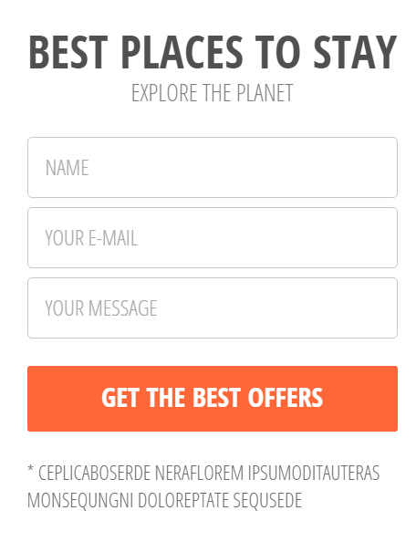

Web Standards Project

About Me!
Hello everyone! My name is Sara Maneval. I am a 3D artist for a company in Tampa, Florida currently. I have a Bachelors Degree in Computer Animation graduating from Full Sail in 2012. I was born in Pennsylvania and raised in Montana.
I have loved Disney movies since I was a year old, for an hour at a time they helped me escape reality. As I got older I grew to love everything about computers as well. During my junior year in high school I was told that I needed to decide on what I should do with my life. It was then I decided to put my two passions together and make my life goal to work at Disney.
I went to two different colleges until I found Full Sail. I was hooked on the college campus life. I made plenty of friends that I still keep in contact with them and I am trying to get them a job where I am at as well! Everyone asks me why I haven't applied for Disney yet and my answer is simple, I am not ready to get to my life goal just yet. I want to experience different studios before I get my dream job. I also figured having two degrees when I graduate in a year and half with my second Bachelors Degree in Web Design and Development, it will increase my chances of working at other various studios. So ask me where I am at in about 10 years because maybe by then I will be in the studio for Disney or Pixar making the next big movie.
Header

Target Audience:
Designed for people who own a house and would like a custom garden pond. The target audience would be adults approximately between the ages of 25 and 65. A custom garden pond design would indicate that the the consumer would be middle to upper class.
Client/User Needs:
The client goal is revenue. They show images of ponds they created in hope to be hired by the user. The users needs are to find a client that can create a custom garden pond right in their own back yard and be affordable at the same time.
Design Critique:
When looking at the picture you see a relaxing, welcoming image. The word 'Laguna' catches your eye with the larger font, it is simple yet effective. The words 'garden pond design' is in between two lines which gives it a nice balance throughout the picture.
Navigation Bar

Target Audience:
Designed for a younger 'hip' crowd who is into films. The target audience would be younger adults approximately between the ages of 18 and 35. They like quick answers, therefore the navigation bar needs to be simple and to the point.
Client/User Needs:
The clients goal is community outreach. They want to inform the user of their work and how to contact them. The user is wanting to know more about the client on a personal level and visited the site in hopes to do so.
Design Critique:
The first thing you notice is the logo on the left hand side with an elegant font and a subtle change in color. The way the lines are setup for the navigation bar gives the appearance that they are buttons even though the lines don’t connect your eyes still connect them anyways.
Login Form
Target Audience:
Designed for adults who are interested in a good bargain. The target audience would be adults approximately between the ages of 18 and 65. If the adult is planning on staying at a hotel, they are probably middle to upper class, but at the same time need to save money when they can so they can spend the rest on their vacation.
Client/User Needs:
The clients goal is customer service. They want to get the user to sign up for their offer. The user is looking for great deals for their next hotel stay, but doesnt want to spend too much money.They are always checking their email to see if there are any bargains sent to them.
Design Critique:
The design is simple yet effective. The header is stating exactly what you are signing up for the larger bold font. With the text in the input boxes, it makes things easier for the user to know what to expect when they press the big orange button after they are filled in.
Features

Target Audience:
The target audience would be for younger adults approximately between the ages of 21 and 35. Younger adults tend to know what they want when they are on websites, so the features need to quick and to the point.
Client/User Needs:
The clients goal is customer service. They are showing the users what they can expect from them as a company with icons and a brief description below. The user want to be able to easily look at these features and either look at the larger icons and know what is going on or they can read all about it.
Design Critique:
The design is nice and simple with a light circle around each blue icon. A header below with a brief description on each of them indicating what the feature is useful in case the user isn’t sure what the icon means.
Services

Target Audience:
Designed for adults who are interested in fashion and photography. The target audience would be for younger adults approximately between the ages of 21 and 35. For a younger crowd that is into fashion, the main services needs to look glamorous for them to stay interested.
Client/User Needs:
The clients goal is revenue. They want to show their portfolio to the users who are interested in a photo shoot. The users want to look good in a photo for either a modeling career or possibly just for a keepsake. Looking at the services is their deal breaker on whether they will continue looking at the site or not.
Design Critique:
First thing you see is the bottom of a ladies head with bright red lipstick on the left side. There are feathers coming out from the top indicating she is wearing a head piece of some kind. It is an effective way to get the attention of the target audience. Even though your eyes are drawn to her you quickly look to the right to notice what they have to offer for their main services. The two thumbnails give a great representation of what they offer.
Image Gallery

Target Audience:
The target audience would be for younger couples approximately between the ages of 20 and 36. The couples looking for a wedding venue would most likely be middle to upper class. The images need to be as elegant as possible to persuade them to go with the service.
Client/User Needs:
The clients goals is revenue. They are showing young couples all the places they can go to have their dream wedding. The user needs to find their wedding venue that will provide more than just a location. They want it to be elegant, memorable, and affordable.
Design Critique:
Each thumbnail has an HD image of what couples could expect their wedding to look like. With a brief description below each picture, it gives the audience a great idea of what they can look forward to. Below the description is an elegant design to help separate the images better.
Blog

Target Audience:
Given that it is a blog, the target audience would be for a younger crowd approximately between the ages of 14 and 28. It is important to keep the website organized and well laid out in order for the younger crowd to stay interested.
Client/User Needs:
The clients goal is community outreach. They write about anything they want on their blog to express themselves. The user will read the blogs to either get insight on the subject or express their opinions on it.
Design Critique:
The dark background with a light font makes it very easy to read and understand. Having a profile picture on the left side the name makes it easier to know who the person writing is since we typically read left to right.
CTA

Target Audience:
The target audience would be for adults approximately between the ages of 18 and 55.Because older people are now making purchases online, it is best to make the font larger then normal.
Client/User Needs:
The clients goal is revenue. The want the user to book and pay online or have the user make an enquiry. The user wants to be able to schedule and pay for a service online without any hassle.
Design Critique:
The icons really help balance the CTA as a whole. Most people know what those stand for so they don’t really need to focus on the words. Having them yellow really helps the user to know where to look.The arrows pointing to the right help the user know that it is a button along with the rounded edges
About Us

Target Audience:
The target audience would be for younger adults approximately between the ages of 21 and 35. The younger crowd is looking to learn more about the company and what the company can provide for them.
Client/User Needs:
The clients goal is community outreach. They want to inform the user about their company. The user would like to get to know the company on a more personal level by reading about them.
Design Critique:
The images running horizontal on the bottom is a great way to look at the clients. They arent all dressed the same indicating the company is for younger crowds and not for CEOs. I believe the “about us” header could be a little bigger to make it stand out more.
Contact Form

Target Audience:
The target audience would be for adults approximately between the ages of 18 and 45. People dont like spending a lot of time filling out forms. Keeping the form straight to the point and with very few input boxes is best.
Client/User Needs:
The clients goal is customer service. They want to get the user to contact them with any comments or problems. The user would like to send an easy form to the company without too much personal information.
Design Critique:
The color and font of the addresses and phone number makes it a little hard to read on a brown background. The headers for each box shouldn’t be the same size as the content below. The form itself is basic and easy to use. It is spaced properly and easy to read.
Footer

Target Audience:
The target audience would be for a younger crowd that uses social media approximately between the ages of 14 and 35. Social media is an everyday thing to them.
Client/User Needs:
The clients goal is customer outreach. They want to let the user interact with them through social media and have all of the websites main points on the right hand side. The user would like to able to connect with the company through social media since they use it everyday.
Design Critique:
The icon for each social media site indicates that it will be for a younger crowd since all they are using is icons and no text indicating what those icons stand for. The 3 columns to the right, show that there will be listing that couldnt fit in the navigation bar and will help the user navigate even more throughout the website.